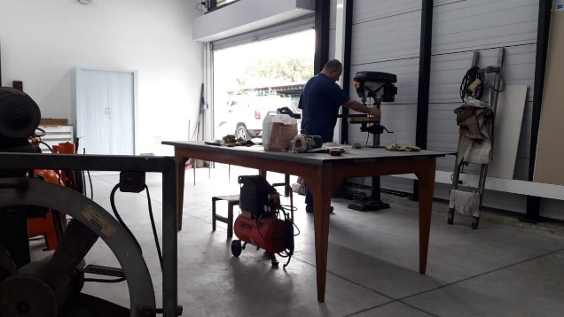

Técnicos y directores
Gestiona tu laboratorio
Encuentra apoyo de la Dirección, procedimientos y herramientas para la operación del laboratorio.

01 · Resuelve una tarea
¿Qué necesitas gestionar?
02 · Accede a los sistemas
Herramientas institucionales
03 · Trabaja con seguridad
Seguridad y buenas prácticas
Prepara un entorno de trabajo seguro
Bioseguridad, salud en el trabajo, gestión ambiental y formación.
04 · Actualiza tu ficha
Mantén vigente la información de tu laboratorio
Revisa servicios, contacto, ubicación y capacidades. Los cambios deben pasar por validación técnica y editorial antes de publicarse.
- Reúne los cambiosIdentifica la ficha, los datos que cambian y su fuente.
- Solicita orientaciónLa Dirección debe confirmar el canal institucional para recibir actualizaciones.
- Valida la publicaciónComprueba el contenido y la fecha de revisión con el responsable editorial.
La creación de un nuevo sitio se gestiona a través de la Decanatura de la facultad y requiere capacidad de mantenimiento, según la comunicación aportada.
Consultar a la Dirección →